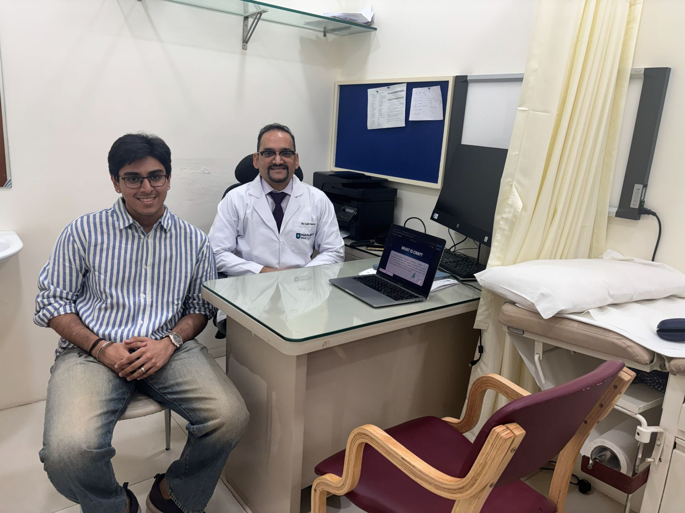

Origin: Why Pneumonia Was Not an Abstract Problem
My interest in pneumonia detection was not purely academic. During my early teens, I was hospitalized with pneumonia, an experience that exposed me to the uncertainty behind clinical decisions and the consequences of delayed or incorrect diagnosis. Years later, when I encountered medical imaging datasets through AI coursework, pneumonia was no longer just a label. It represented the gap between prediction and care, and the responsibility embedded in that gap.
Pneumonia Detection Model
In Grade 11, I began developing a convolutional neural network to classify chest X-ray images as normal or pneumonia-positive. Working with publicly available datasets, I focused on dataset curation, preprocessing decisions, and validation strategies that balanced performance with generalizability.
The model achieved approximately 93% accuracy. From the outset, this number was treated as a starting point for analysis, not a conclusion.
Clinical Mentorship & Translational Responsibility

As the work progressed, I recognized that further development without clinical grounding would be irresponsible. I sought mentorship from Dr. Lalit Verma, MD, Senior Consultant Physician at Nanavati Max Super Speciality Hospital, Mumbai, who became my clinical mentor and project collaborator over the following two years.
Under his guidance, the project shifted from technical optimization to translational reasoning. Our discussions focused on diagnostic uncertainty, trade-offs between sensitivity and specificity, and the real clinical consequences of false positives and false negatives.
When technical assumptions conflicted with clinical realities, I was expected to reassess, retrain, and recalibrate the model, even when doing so reduced apparent performance. Accuracy was never treated as an endpoint. Patient safety and interpretability were treated as constraints.
Before concluding the work, I prepared a detailed technical and ethical report synthesizing model behavior, limitations, and clinical implications for Dr. Verma’s review.
Explore More


{kind=link}